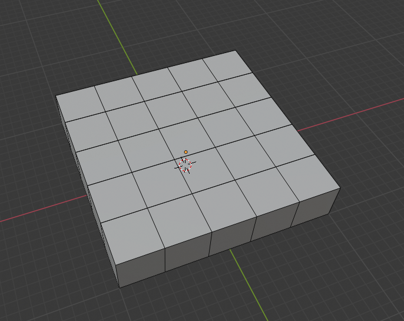
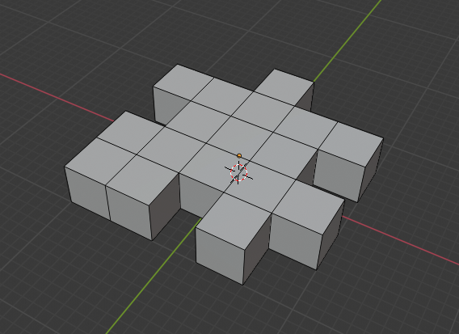
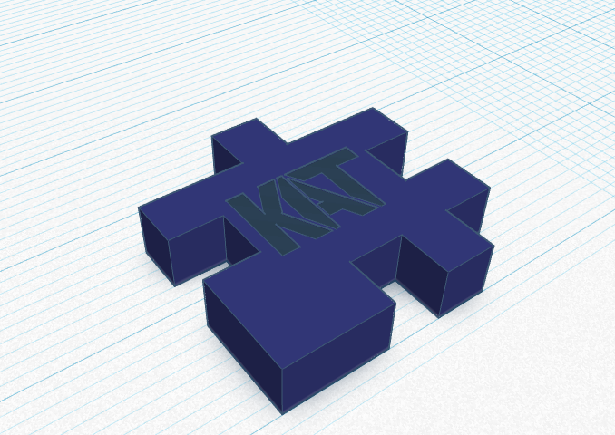
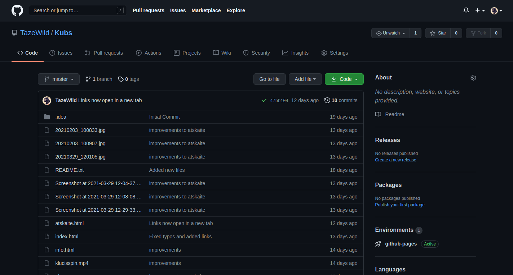
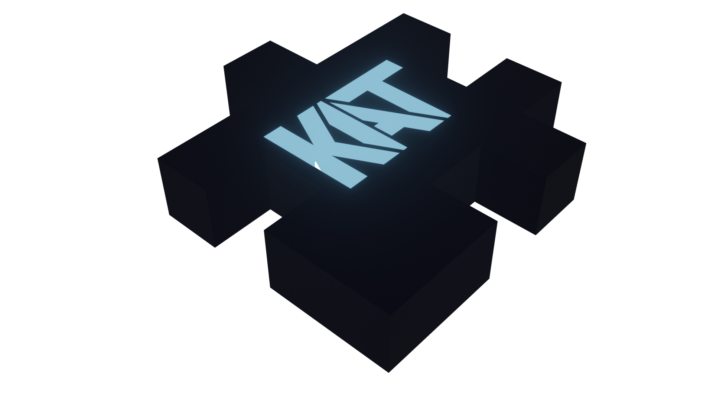

Ideja
No šī mīkstā puzles kubiņa radās iniciālā ideja kuba skaldņu veidošanai.
Nosūtīju visiem atsevišķās skaldnes un katrs izvēlējās savu. Es izvēlējos skaldni ar numuru 6.
Šo iniciāļu struktūru biju izdomājusi jau sen, un nolēmu to šoreiz arī likt lietā.
Uzzīmēju skici un pierakstīju izmērus.
Uzzīmēju skici un pierakstīju izmērus.
Darbs ar Blender

Skaldnes veidošanai nolēmu izmantot software Blender, jo ar to jau biju darbojusies iepriekš, tas bija pazīstamāks.
Tātad, izveidoju plakni un sadalīju to 25 daļās.
Tātad, izveidoju plakni un sadalīju to 25 daļās.

Tālāk izdzēsu liekās daļas tā, lai skaldne atbilstu oriģinālam.
Nākamais solis: iniciāļu veidošana.
Attiecīgi no iepriekš veidotās skices izveidoju plakni ar iniciāļiem, kā arī parūpējos par to, lai viss turētos kopā, izveidojot spraugas starp burtiem.
Attiecīgi no iepriekš veidotās skices izveidoju plakni ar iniciāļiem, kā arī parūpējos par to, lai viss turētos kopā, izveidojot spraugas starp burtiem.
Darbs ar TinkerCAD

Programmā TinkerCAD importēju gan Blender izveidoto skaldni, gan iniciāļus. Tos savienoju, izmantojot "hole" parametru.
Mājaslapas veidošana

Programmā WebStorm izveidoju repository, un sāku rakstīt HTML5 un CSS mājaslapai.

Mājaslapā Github ievietoju savus failus
Papildu attēli

Savu skaldni imprtēju atpakaļ Blender, nomainīju materiālus un uzrenderēju attēlu.